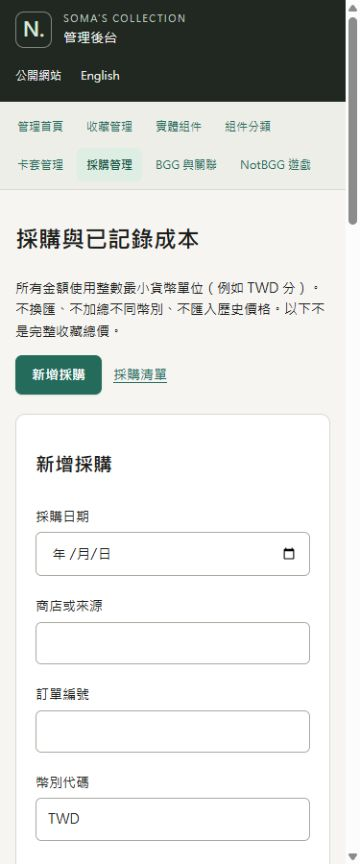

01-dashboard 管理首頁
/admin審核：□ 保留 □ 調整（欄位／區域） □ 補看狀態
02-collection-list 收藏清單
/admin/collection審核：□ 保留 □ 調整（欄位／區域） □ 補看狀態
03-collection-new 新增收藏
/admin/collection/new審核：□ 保留 □ 調整（欄位／區域） □ 補看狀態
04-collection-edit 編輯收藏
/admin/collection/1?scope=test審核：□ 保留 □ 調整（欄位／區域） □ 補看狀態
05-copies 收藏副本與狀況
/admin/collection/1/copies?scope=test展開表單／頁底補充
審核：□ 保留 □ 調整（欄位／區域） □ 補看狀態
06-physical 實體組件與清點
/admin/collection/components/manage?collection=1展開表單／頁底補充
審核：□ 保留 □ 調整（欄位／區域） □ 補看狀態
07-classification 組件分類
/admin/collection/components/classification審核：□ 保留 □ 調整（欄位／區域） □ 補看狀態
08-sleeve-products 卡套產品與庫存
/admin/sleeves展開表單／頁底補充
審核：□ 保留 □ 調整（欄位／區域） □ 補看狀態
09-sleeve-sizes 卡套尺寸
/admin/sleeves?view=sizes審核：□ 保留 □ 調整（欄位／區域） □ 補看狀態
10-sleeve-references 卡套需求查詢
/admin/sleeves?view=requirements審核：□ 保留 □ 調整（欄位／區域） □ 補看狀態
11-sleeve-transactions 卡套庫存交易
/admin/sleeves?view=transactions審核：□ 保留 □ 調整（欄位／區域） □ 補看狀態
12-sleeve-workflow 卡套需求與逐副本套用
/admin/sleeves/requirements?collection=1展開表單／頁底補充
審核：□ 保留 □ 調整（欄位／區域） □ 補看狀態
13-purchases 採購清單與成本
/admin/purchases審核：□ 保留 □ 調整（欄位／區域） □ 補看狀態
14-purchase-new 新增採購與分攤
/admin/purchases?new=1CSS viewport 1440×900；點圖看原始 JPEG
CSS viewport 375×900；點圖看原始 JPEG 審核：□ 保留 □ 調整（欄位／區域） □ 補看狀態
15-purchase-edit 編輯採購與分攤
/admin/purchases?id=1審核：□ 保留 □ 調整（欄位／區域） □ 補看狀態
16-bgg-cache BGG同步
/admin/bgg審核：□ 保留 □ 調整（欄位／區域） □ 補看狀態
17-game-relations 遊戲關聯
/admin/bgg?view=relations&domain=game CSS viewport 1440×900；點圖看原始 JPEG
CSS viewport 1440×900；點圖看原始 JPEG CSS viewport 375×900；點圖看原始 JPEG
CSS viewport 375×900；點圖看原始 JPEG展開表單／頁底補充
審核：□ 保留 □ 調整（欄位／區域） □ 補看狀態
18-collection-relations 收藏組合
/admin/bgg?view=relations&domain=collection審核：□ 保留 □ 調整（欄位／區域） □ 補看狀態
19-notbgg-list NotBGG清單
/admin/notbgg審核：□ 保留 □ 調整（欄位／區域） □ 補看狀態
20-notbgg-new 新增NotBGG
/admin/notbgg/new審核：□ 保留 □ 調整（欄位／區域） □ 補看狀態
21-notbgg-edit 編輯NotBGG
/admin/notbgg/000001展開表單／頁底補充
審核：□ 保留 □ 調整（欄位／區域） □ 補看狀態
22-notbgg-link NotBGG身份對應
/admin/notbgg/000001/linkCSS viewport 1440×900；點圖看原始 JPEGCSS viewport 375×900；點圖看原始 JPEG 審核：□ 保留 □ 調整（欄位／區域） □ 補看狀態
23-notbgg-relations NotBGG配件關聯
/admin/notbgg/000001/relationsCSS viewport 1440×900；點圖看原始 JPEGCSS viewport 375×900；點圖看原始 JPEG 審核：□ 保留 □ 調整（欄位／區域） □ 補看狀態